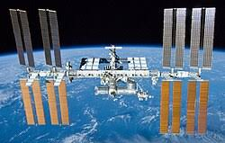
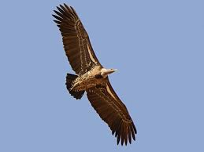
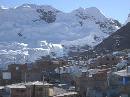
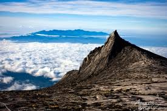
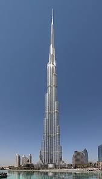
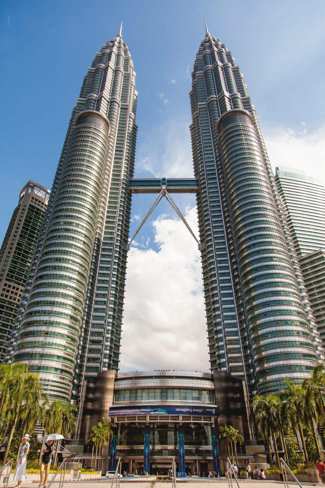
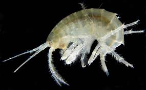
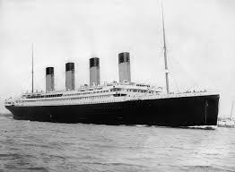

😀
Kármán line
[100,000 m]
Conventional flight mechanics impossible
[100,000 m]
Conventional flight mechanics impossible
100000m
99000m
98000m
97000m
96000m
95000m
Did you know?
As a star approaches the observer, the wavelength of the emitted light
would become shorter, causing the stars to appear more blue.
This phenomenon is called "blue shift"
This phenomenon is called "blue shift"
94000m
93000m
92000m
91000m

International Space Station orbital drag becomes measurable
[90,000 m]
[90,000 m]
89000m
88000m
87000m
86000m
85000m
84000m
83000m
82000m
81000m
 Auroras form
Auroras form [above 80,000 m]
Mesosphere ends
[80,000 m]
[80,000 m]
79000m
78000m
77000m
76000m
75000m
74000m
73000m
72000m
71000m
69000m
68000m
67000m
66000m
65000m
64000m
63000m
62000m
61000m
Meteor begins to burn due to atmospheric friction
[60,000 m]
This atmospheric region is called mesosphere
[60,000 m]
This atmospheric region is called mesosphere
59000m
58000m
57000m
56000m
55000m
54000m
Highest scientific balloon
[53,700 m]
BS 13-08, JAXA, 20 September 2013
[53,700 m]
BS 13-08, JAXA, 20 September 2013
53000m
52000m
51000m
49000m
48000m
47000m
46000m
45000m
44000m
43000m
42000m
> Highest freefall parachute jump
[41,492 m]
Alan Eustace, 24 October 2014
[41,492 m]
Alan Eustace, 24 October 2014
41000m
39000m
Felix Baumgartner jump
[38,969 m]
14 October 2012, achieved fastest speed in a freefall
[1,357.6 km/h], first person to break the sound barrier in a freefall
[38,969 m]
14 October 2012, achieved fastest speed in a freefall
[1,357.6 km/h], first person to break the sound barrier in a freefall
38000m
37000m
36000m
35000m
34000m
33000m
32000m
31000m
29000m
28000m
27000m
26000m
25000m
24000m
23000m
22000m
21000m
Peak ozone density in the stratosphere
[20,000 m]
[20,000 m]
19500m
19000m
18500m
19000m
18500m
18000m
17500m
17000m
16500m
16000m
15500m
Ozone concentration begins increasing rapidly
[15,000 m]
[15,000 m]
15000m
14500m
14000m
13500m
13000m
12500m
12000m
Troposphere ends
[12,000 m]
Troposphere is where most weather phenomena happen
[12,000 m]
Troposphere is where most weather phenomena happen
11500m

Highest-flying bird
[11,300 m]
Rüppell's Griffon Vulture - reportedly discovered to fly at this height after being struck by an airplane
[11,300 m]
Rüppell's Griffon Vulture - reportedly discovered to fly at this height after being struck by an airplane
11000m
10500m
Commercial flight height
[10000 m]
Flights commonly fly at 9000m ~ 12000m
[10000 m]
Flights commonly fly at 9000m ~ 12000m
9500m
9000m
 Mount Everest summit
Mount Everest summit [8,848 m]
8500m
8000m
7500m
7000m
Oxygen supplementation required for non-acclimated humans
[7,000 m]
[7,000 m]
6500m
6000m
Everest base camps location
[6,000 m]
[6,000 m]
5500m

Highest permanent settlement
[5,100 m]
La Rinconada, Peru
[5,100 m]
La Rinconada, Peru
4500m

Mount Kinabalu highest peak
[4,095 m]
Tallest mountain in Malaysia
[4,095 m]
Tallest mountain in Malaysia
4000m
3500m
3000m
Eagles & migratory birds flight height
[3,000 m]
[3,000 m]
2750m
First clouds (cumulus) often start
[2,750 m]
[2,750 m]
2250m
2000m
1750m
1500m
1250m
1000m
Typical altitude of light aircraft
[1,000 m]
[1,000 m]

Tip of Burj Khalifa
[830 m]
Tallest skyscraper
[830 m]
Tallest skyscraper
750m
500m

Petronas Twin Towers — tallest twin buildings
[452 m]
[452 m]
250m
Technical dive certifications maximum depth
[100 m]
Divers could go deeper with training and specialized gear
[100 m]
Divers could go deeper with training and specialized gear
-200m
-300m
Deepest scuba dive
[332 m]
Ahmed Gabr, 18-19 September 2014
[332 m]
Ahmed Gabr, 18-19 September 2014
-400m
Upper mesopelagic (twilight zone); sunlight rapidly fading
[500 m]
[500 m]
-600m
-700m
-800m
-900m
 Blue whales
Blue whales [~1000 m]
Prefer depths of 400-1,000 meters for krill, but also seen closer to shore.
-1100m
-1200m
-1300m
-1400m
-1500m
-1600m
-1700m

Cold, dark waters; deep-sea shrimp and amphipods
[1,750 m]
[1,750 m]
-1800m
-1900m
-2100m
-2200m
-2300m
-2400m
-2500m
Bathypelagic (midnight zone); total darkness
[2,500 m]
[2,500 m]
-2600m
-2700m
-2800m
-2900m
Deep-sea anglerfish and gulper eels common
[3,000 m]
[3,000 m]
-3100m
-3200m
-3300m
-3400m
-3500m
-3600m
-3700m
-3800m

Titanic wreckage
[3800 m]
15 April 1912, 325 nmi (600 km) south-southeast of Newfoundland, North Atlantic Ocean
[3800 m]
15 April 1912, 325 nmi (600 km) south-southeast of Newfoundland, North Atlantic Ocean
-3900m
-4100m
-4200m
-4300m
-4400m
-4500m
Sea cucumbers and brittle stars dominate
[4,500 m]
[4,500 m]
-6000m
 Snailfish adapted to extreme pressure
Snailfish adapted to extreme pressure [6,250 m]
-6500m
-7000m
Near-total isolation from surface ecosystems
[7,250 m]
[7,250 m]
-7500m
-8000m
-8500m
-9000m
-9500m
-10500m
Deepest known point of the Earth seabed
[~10935 m]
Challenger Deep, Mariana Trench, 200 km east of Mariana Islands, Pacific Ocean
[~10935 m]
Challenger Deep, Mariana Trench, 200 km east of Mariana Islands, Pacific Ocean
-11000m